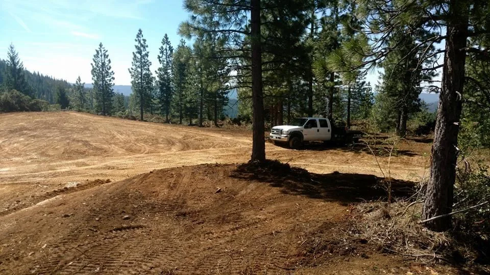
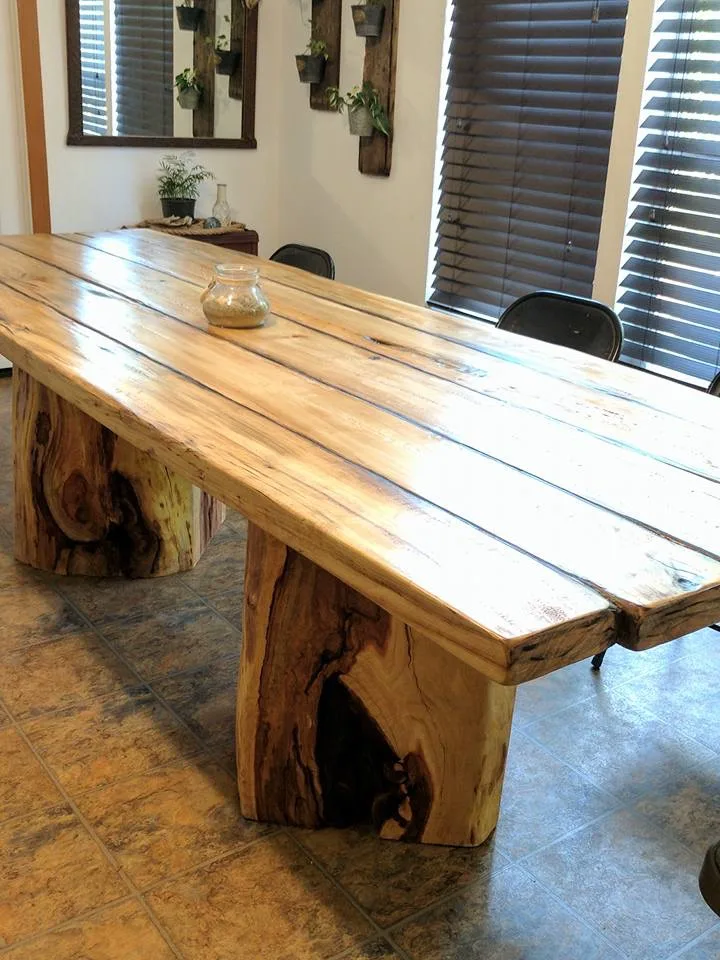
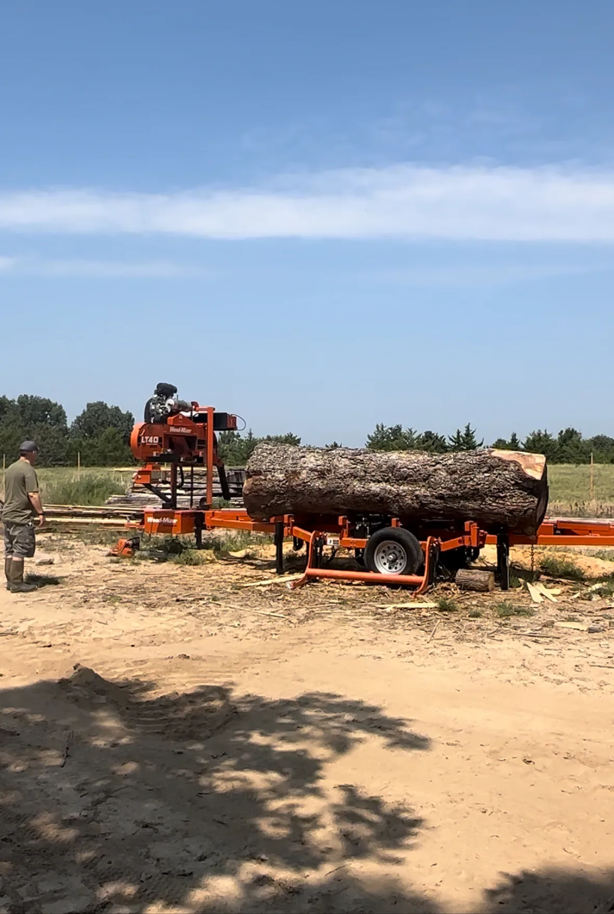

01
Land Clearing
Selective clearing, lot clearing, brush removal, hazardous-tree cleanup and view restoration.
- Residential and commercial lots
- Overgrown acreage
- Fence lines and access routes
- Lakefront view restoration

Services
Professional property improvement, site development and custom milling services throughout Grand Lake and Northeast Oklahoma.
01
Selective clearing, lot clearing, brush removal, hazardous-tree cleanup and view restoration.
02
Clearing, grading, drainage shaping and access preparation for residential and commercial projects.

03
House, shop, barndominium, RV and equipment pads shaped with stability, access and drainage in mind.

04
New construction, repairs, gravel placement, reshaping and drainage improvements.

05
Vegetation management that improves access and visibility while preserving selected trees.

07
Heavy-equipment support for fallen trees, debris removal and property restoration after severe weather.

08
Portable custom milling that turns customer-supplied logs into useful lumber and specialty cuts.

